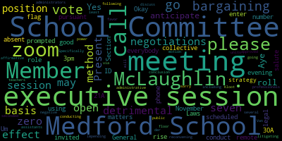

[DnBk5C8-dFs_SPEAKER_09]: Mayor, I'm gonna have to email you the text because there's a problem with the document. It's not letting me share to the city address, but it'll be in your email in just a second.
[Unidentified]: Okay, thank you. You should have it now.
[Lungo-Koehn]: Okay, so good evening, everybody. We have our method school committee meeting November 18 2021 remote meeting by zoom executive session for 3pm methods schools invited you a scheduled zoom meeting. You can call in by using phone number 929-205-6099 enter meeting ID 985-2458-9661 when prompted. Um, if you could call the role member McLaughlin, please.
[McLaughlin]: Member Graham. Here. Member Kreatz. Here. Member McLaughlin here. Member Mustone. Oh, here I am. Member Ruseau.
[DnBk5C8-dFs_SPEAKER_09]: Here.
[McLaughlin]: Member Van der Kloot. Mayor Lungo-Koehn.
[Lungo-Koehn]: Present, seven present, zero absent. If we could just all please rise to salute the flag.
[Unidentified]: I pledge allegiance to the flag of the United States of America, to the republic for which it stands, one nation under God, indivisible, with liberty and justice for all.
[McLaughlin]: Motion to move to executive session.
[Unidentified]: Second.
[Lungo-Koehn]: negotiations and legal matters executive session of the Medford School Committee pursuant to General Laws 30A, Section 21A to conduct a collective bargaining strategy session on the basis that an open meeting may have a detrimental effect on the bargaining positions of the Medford School Committee. Specifically, the Medford School Committee will discuss impending negotiations with several bargaining units, including at least teachers, power professionals, administrative assistants, and administrators on the basis that an open meeting may have a detrimental effect on the litigating position of the Medford School Committee. Medford School Committee anticipates conducting this via Zoom and does not anticipate reconvening in public session following the conclusion of the executive session. There's a motion on the floor by Member McLaughlin, seconded by Member Van der Kloot to go into executive session. All those in favor? Aye. Aye.
[DnBk5C8-dFs_SPEAKER_09]: Those opposed?
[Lungo-Koehn]: I'm sorry, it has to be a roll call vote to go into executive session. Roll call vote, Member McLaughlin, please.
[McLaughlin]: Member Graham? Yes. Democrats? Yes. Member McLaughlin? Yes. Member Mustone?
[Unidentified]: Yes.
[McLaughlin]: Member Ruseau? Yes. Member Van der Kloot?
[Lungo-Koehn]: Yes.
[McLaughlin]: Mayor Lungo-Koehn?
[Lungo-Koehn]: Yes. Seven in the affirmative, zero in the negative. We are going to go into executive session as approved by 7-0 vote.
|
total time: 1.54 minutes total words: 255  |
total time: 0.53 minutes total words: 48 |
||
{kind=link}
{kind=link}